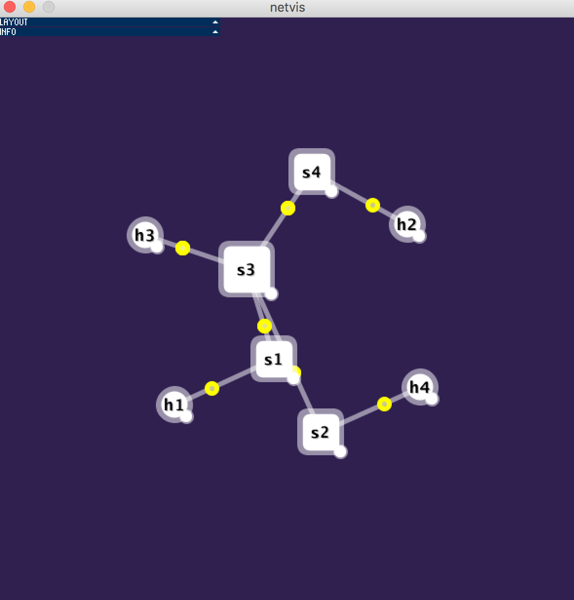

Routing
Code available on GitHub here.
Introduction
With abstraction, people using the internet seldom have to worry about their messages not reaching their recipients. Users of the internet are also able to enjoy high speed services without much worry. In this post, I will attempt to look what happens behind the scenes (say when a person tries to send a message to another person on the other side of the world).
First, it is important to understand that everything has to be encoded as bits, which are in turn encoded into network packets.
The core task of the internet is to deliver packets between applications on different hosts (computers). This task involves using routers and links.
In the picture below, the packets are the yellow objects. The thing on which the packets traverse is called a link. The other entities (h1, s1, etc) are hosts.

Distance Vector Router
The fundamental question is: how do we deliver packets reliably? After all, packets can be dropped along the way (buffers in router can overflow, links can garble packets, etc).
On a high level, each distance vector router stores information about distances to each destination (other routers/hosts).
Efficient and Scalable
Since each router knows the distances to each of its neighbors, and each of its neighbor's distances to other routers, it can find the shortest routes to all these other routers!
Besides, it is scalable as it does not need to know the entire network topology!
Fault Tolerance
To ensure packets always reach their destinations, the network uses a protocol known as Transmission Control Protocol (TCP) which resends lost/corrupted packets until the packets have been acknowledge (ACK'd) by the recipients.